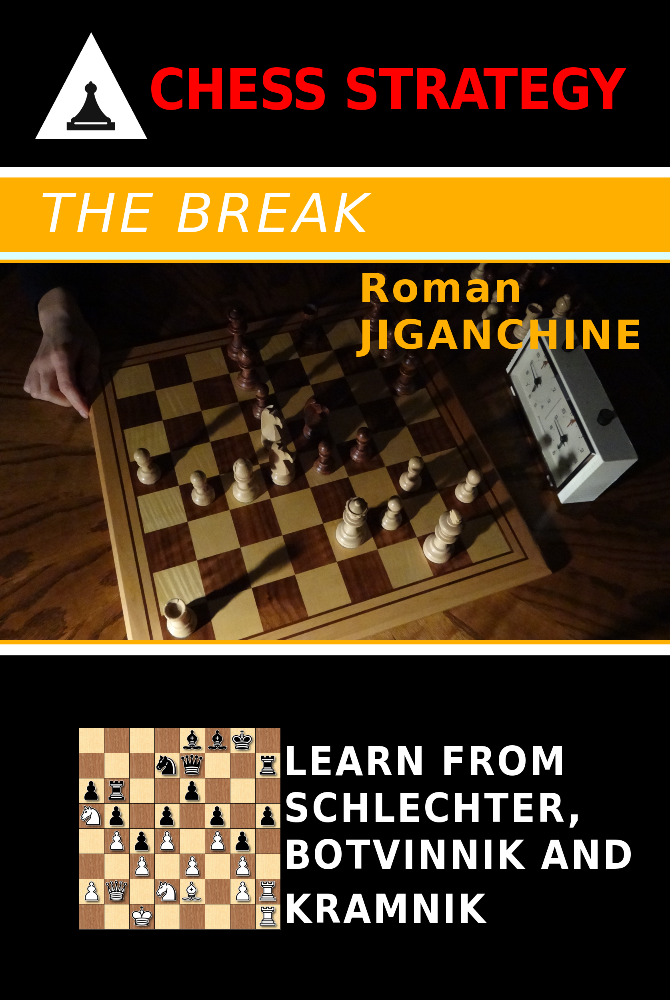

The Break
Created Thursday 07 December 2017
Amazon | Kobo | Google Play | Forward Chess | Paperback

A break is generally an unexpected or sacrificial pawn move that can serve multiple purposes, including, but not limited to:
- Opening up files or diagonals
- Directly attacking opponent's king
- Gaining space
- Freeing up a square (e.g. as an outpost for a knight)
- Undermining opponent's pawn structure/chain
- Creating a passed pawn
Contents
- Schlechter
- Attacking the King
- Endgame Breakthroughs
- Botvinnik
- Isolated Queen's Pawn
- Undermining the Center
- Opening a Diagonal
- Opening up the 'c' File
- Creating a Passed Pawn
- Exchange Slav Structures
- Endgames With Bishops of Opposite Colour
- Other Examples
- Kramnik
- King's Indian Structures
- Queen's Gambit Declined
- Queen's Gambit Accepted
- Sicilian Sveshnikov Structures
- Recent Examples
- Other players
- Opening
- Middlegame
- Endgame
Backlinks:
Middlegame